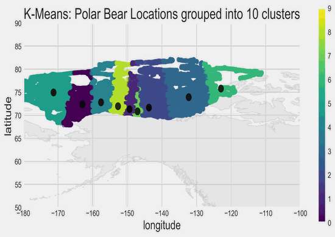

{% extends "layout.html"%}
{% block title %} 
Home Page
{% endblock %}
<!-- link to codereb -->

{%block body%}
<style>
body {
    background-position: center;
    background-size: cover;
    background-image: url("https://polar-ice.org/wp-content/uploads/2016/01/banner_31.jpg");
    min-height: 100%;
}
div.transbox {
    background-color: rgb(255, 255, 255);
    margin: 0%;
    opacity: 0.75;
}
</style>
<br><br><br>
<div class="transbox">
    <h1 style="padding-left:475px">K-Means Graph of Polar Bear Locations</h1>
</div>

<div style="padding-left:300px" ><br>

</div>
{%endblock %}
